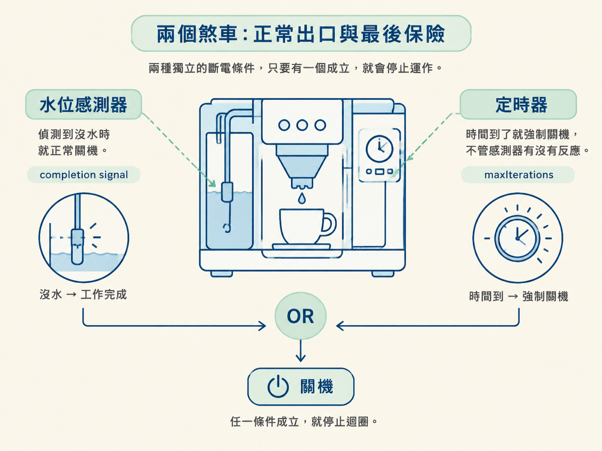
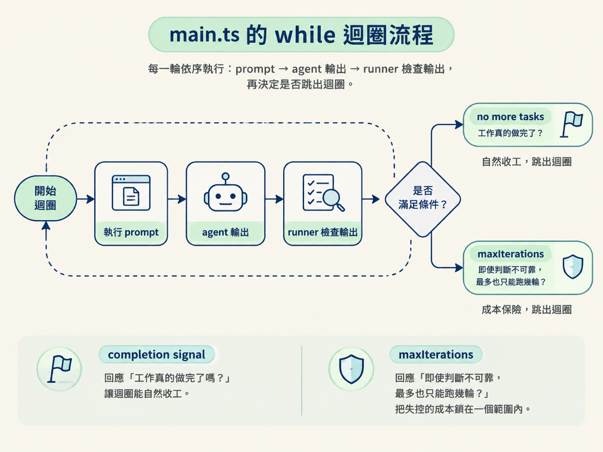

maxIterations 與 completion signal看完這一節，你會知道 AFK 迴圈靠哪兩個條件停止：maxIterations 與 completion signal no more tasks。而且你要能理解，為什麼要讓「完成訊號」負責正常收工，再用「次數上限」當最後一道保險。
睡前，你按下 main.ts，打算讓它自己把剩下的 phase 做完。結果隔天早上醒來，程式還在執行，token 帳單多了一大截，專案裡甚至出現一堆重複、互相打架的 commit。
這種失控通常不是因為迴圈會重複執行，而是因為它不知道什麼時候該停。上一節我們看到，main.ts 會反覆執行同一段 prompt；這一節要追問的是：它憑什麼判斷「已經做完」？又要如何避免判斷失準時一路跑下去？
main.ts 的迴圈同時設定了兩個停止條件。只要其中一個先成立，迴圈就會結束。
第一個是 maxIterations，也就是迭代次數的硬上限。假設你把它設成 3，迴圈最多只會跑三輪。第三輪結束後，不管任務完成了沒有，都必須停下來。它像一座只認刻度的護欄：不理解工作內容，也不會評估進度，只會數「已經跑了幾輪」。
第二個是 completion signal，也就是完成訊號。這裡約定使用的字串是 no more tasks。prompt.md 會告訴 agent：如果已經沒有更多任務，就輸出這段文字。每一輪結束時，runner 會檢查 agent 的輸出；只要看到 no more tasks，就判斷工作已完成，立即停止迴圈。
因此，completion signal 不是 runner 自己猜出來的結果，而是 prompt 與 runner 之間約好的合約：prompt 負責在適當時機發出訊號，runner 負責聽到訊號後關門。
兩個條件的關係是 OR：達到
maxIterations，停；提早看到no more tasks，也停。哪一個先發生，就由哪一個結束迴圈。
可以把它想成一台自動咖啡機。水位感測器發現沒水時，機器就能正常斷電，這就像 completion signal：工作完成了，由它決定何時收工。同時，機器還有一個定時器；時間到了就強制關機，不管感測器有沒有反應。這就是 maxIterations：感測器失效時，仍然有最後一道保險。

兩個停止條件都有了，接著就是一個很實際的問題：maxIterations 應該設多大？這個數字其實反映了你對 agent 的信任程度，以及你願意承擔多少 token 成本。
第一種做法是「訊號優先」。講師自己執行時偏向這種方式，通常會把 maxIterations 設得很高，例如 10、15，有時甚至 50。背後的想法是：只要 agent 做完，就會輸出 no more tasks；這個上限平常不該派上用場，只是為了避免極端情況下失控。因此，上限設高一點，可以讓 agent 自己跑到完成。
第二種做法是「預算優先」。課程示範刻意把 maxIterations 設得很小，例如 3，目的就是避免一次燒掉太多 token。先讓 agent 跑幾輪，確認方向與結果，再決定要不要繼續。這樣一來，「要不要再跑」的主導權仍然在你手上。
| 訊號優先 | 預算優先 | |
|---|---|---|
| 上限設定 | 設高，例如 10 到 50 | 設低，例如 3 |
| 停止主因 | 由 no more tasks 決定 | 由 maxIterations 決定 |
| 優點 | 真的做完才收工，不用手動續跑 | 成本可控，隨時可以停下來檢查 |
| 風險 | 訊號若失效，可能持續消耗 token | 可能做到一半就停，之後還要再執行一次 |
所以，調這個上限其實是在拿捏兩件事：願意放手多少，以及最多能花多少。你越相信 agent 能正確判斷何時完成，就越能把上限設高；你越不確定，就越應該先用較低的上限框住預算。
這也不是一次決定就永遠不變。你可以先保守地跑一次，觀察 agent 在第幾輪輸出完成訊號，再依照實際結果調整下一次的上限。
把這個機制放回整條流程來看：main.ts 負責讓「一圈」反覆執行，而 maxIterations 與 completion signal 則共同決定這個 while 迴圈何時離開。
它們處理的是兩件事。completion signal 回應的是「工作真的做完了嗎？」；maxIterations 回應的是「即使判斷不可靠，最多也只能跑幾輪？」前者讓迴圈能自然收工，後者則把失控的成本鎖在一個範圍內。

還有一個關鍵連結：這兩個停止條件的可靠性，取決於 prompt 是否清楚寫出「什麼情況算做完」。如果 prompt.md 從未要求 agent 在沒有更多任務時輸出 no more tasks，completion signal 就不會觸發，迴圈只能等到硬上限才停止。
換句話說，這不只是 runner 的設定問題，也是 prompt 設計問題。runner 提供了門，prompt 必須告訴 agent 什麼時候該走到門口。
現在你已經知道迴圈靠什麼停止，下一步就是觀察它實際跑起來的樣子。下一節會啟動一次完整流程，從頭讀過執行日誌，看看這兩個條件在真實執行中如何發揮作用。
AFK 迴圈有兩個終止條件：達到
maxIterations，或看到 completion signalno more tasks，哪一個先發生就停止。completion signal 是 prompt 與 runner 之間的合約，讓 agent 在確實完成工作時提早收工；maxIterations則是不看情況的硬上限，用來防止迴圈失控。上限設高或設低，取決於你對 agent 的信任程度，以及你想如何控制 token 預算。